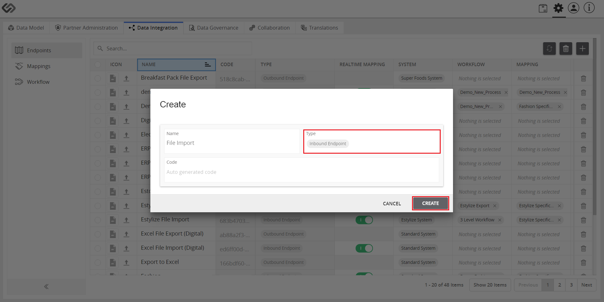
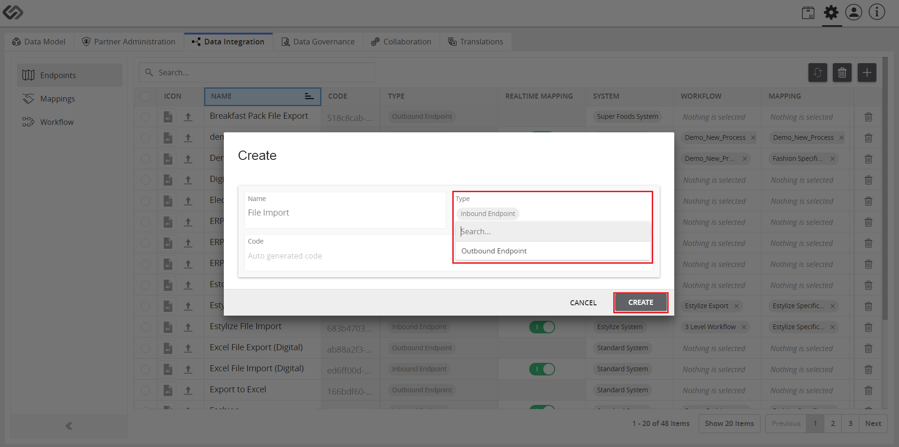

Manage Endpoints for a System¶
Manage Endpoints for a System is an admin feature that manages endpoints in the system that are used for onboarding or offboarding of products.
| Key Term: |
|
| Description: |
|
| Related topics: | |
| Application: |
|
How-to: Manage Endpoints for a System¶
To manage the endpoints, follow these steps:
- Log in and go to Administration.

- Click on the Data Integration tab and then go to Endpoints.
- On the right, click on the “+” icon to create a new endpoint.
- Provide the required details.

- If onboarding products, select the Inbound Endpoint for the Type. Click Create.

- If offboarding products, select the Outbound Endpoint for the Type. Click Create.
- Once the endpoint has been added, enable (or disable) the Realtime Mapping. This allows the mapping in runtime that can be tracked in the dashboard. Click the Save button.
- Click on the System field and create a new system or use the “Standard System” from the selection.
- To create a new system, click on the Create ‘system name’ button after typing the name of the new system to be added.
- Next, follow this sequence: Partner Administration tab >> Partners >> Standard Organization >> Systems.
- Add the created system or select the Standard System as you click on the “+” icon to add systems.
- Then, enable the endpoint that was created.
- View the endpoint in the Dashboard.